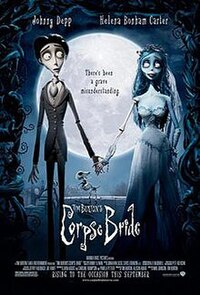

Kung Fu Panda

Po é um panda que trabalha na loja de macarrão da sua família e sonha em transformar-se em um mestre de kung fu
TrailerA Noiva Cadáver
As famílias de Victor e Victoria estão arranjando seu casamento. Nervoso com a cerimônia, Victor vai sozinho à floresta para ensaiar seus votos. No entanto, o que ele pensava ser um tronco de árvore na verdade é o braço esquelético de Emily, uma noiva que foi assassinada depois de fugir com seu amor
TrailerJurassic Park

Os paleontólogos Alan Grant, Ellie Sattler e o matemático Ian Malcolm fazem parte de um seleto grupo escolhido para visitar uma ilha habitada por dinossauros criados a partir de DNA pré-histórico
Trailer